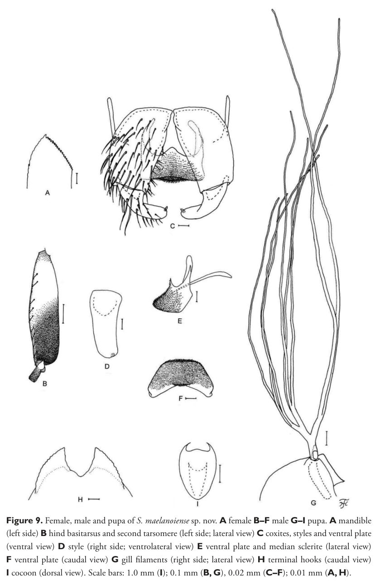

Species › Simulium › Gomphostilbia
Simulium maelanoiense
| Classification | Genus Simulium, subgenus Gomphostilbia |
|---|---|
| Status | valid |
| Distribution | Thailand (Lampang and Mae Hong Son) (Takaoka et al. 2020) |
| Thailand | Type locality: Mae La-noi, Mae Hong Son Province, 974 m, 18°20'35.8"N, 14-VII-2017; also Lampang (Takaoka et al. 2020, pp. 81-85) |
| Diagnostic notes | S. asakoae species-group (COI subgroup VII, sister to S. myanmarense). Mature larva unknown. Female: body 1.9-2.2 mm, mandible with 1 outer tooth (vs 3 teeth in S. sutheppuiense), claw tooth 0.50x claw, labrum 0.7x clypeus (vs 0.6x in S. sutheppuiense), 5th palpal segment 2.1x 3rd (vs 2.6x in S. loeiense). Male: brown upper-eye facets in 11 vertical columns and 13 horizontal rows, head slightly wider than thorax, 1st flagellomere 1.8-1.9x 2nd, hind basitarsus 1.0-1.1x hind femur (indistinguishable from S. sutheppuiense in male key couplet 15a). Pupa: terminal hook outer/inner margin 2.0-2.9 (couplet 12a) (Takaoka et al. 2020, pp. 81-85). |
| Sources | Takaoka et al. 2020 |
How it keys out
The chain of characters leading to this taxon in each key (a ready-made diagnosis).
Thailand: Simulium asakoae species-group (females) (Takaoka et al. 2020) – couplet 10b
- 1b Hair tuft of base of radial vein yellow
- 2b Sensory vesicle short to medium-long, less than 0.4 times length of third palpal segment (Fig. 1A)
- 4a Mandible with distinct teeth on outer margin (Fig. 22B)
- 5a Body length 1.9–2.2 mm
- 6a Claw tooth 0.50–0.53 times length of claw (Fig. 1E)
- 7b Claw tooth 0.50 times length of claw
- 8b Sensory vesicle 0.26–0.32 times length of third palpal segment
- 9b Labrum 0.7 times as long as clypeus
- 10b Fifth palpal segment 2.1 times as long as third
Thailand: Simulium asakoae species-group (males) (Takaoka et al. 2020) – couplet 15a
- 1b Hair tuft of base of radial vein yellow
- 2b Upper-eye (large) facets medium to dark brown
- 4b Antenna brownish except scape, pedicel and base of first flagellomere yellowish
- 5b Hind basitarsus 1.0–1.3 times as wide as hind femur (Fig. 4C)
- 11b Upper-eye (large) facets in 11 or more vertical columns
- 12a Upper-eye (large) facets in 11 vertical columns
- 13b Head slightly wider than thorax
- 15a First antennal flagellomere 1.8–1.9 times as long as second
Thailand: Simulium asakoae species-group (pupae) (Takaoka et al. 2020) – couplet 12a
- 1b Cocoon with or without anterodorsal bulge or short anterodorsal projection (up to ca. 1.0 mm long) extended at most up to anteroventral tips of cocoon
- 3b Dorsum of abdominal segments 1 and 2 unpigmented or light yellowish
- 5b Dorsum of abdominal segment 1 without minute tubercles
- 7b Cocoon without anterodorsal projection
- 9b Terminal hooks widened, plate-like, with outer margin over 1.5 times length of inner margin, and crenulated
- 10b Stalk of ventral pair thinner than interspiracular trunk
- 11b Gill arranged as (3+3)+2 from dorsal to ventral, with medium-long common basal stalk shorter than interspiracular trunk ⚠
- 12a Outer margin of terminal hook 2.0–2.9 times as long as inner margin ⚠
Figures

